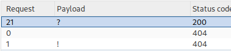
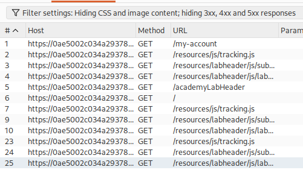

Exploiting origin server normalization for web cache deception
- Provided with blog website, credentials “wiener:peter”, told to find the API key for user carlos.
- Logged in with provided credentials
- Intercepted refresh request in burpsuite
- Appended string “test” to /my-account in request and received 404 error. Since it is not a redirect it is a functional endpoint for finding and abusing the delimiter
- Forwarded request to intruder
- Added positions between original path and arbitrary string and pasted provided possible delimiter list into payload
- Discovered “?” delimiter is used for this server:

- Checked for directory traversal capabilities by inserting aaa/../ before my-account. Success
- Checked HTTP history for clues on static folders
- Discovered trend of /resources for mostly static items:

- Forwarded one of the requests to repeater and inserted ../ between the /resources and the resource being accessed
- The file was still able to be accessed
- Switched to /resources/../my-account
- Successfully loaded my-account page
- Tried in browser and noticed removal of static folder for caching
- Switched / to %2F and issue was resolved
- Added arbitrary cache buster to end and sent URL to victim using provided exploit server and completed lab successfully: